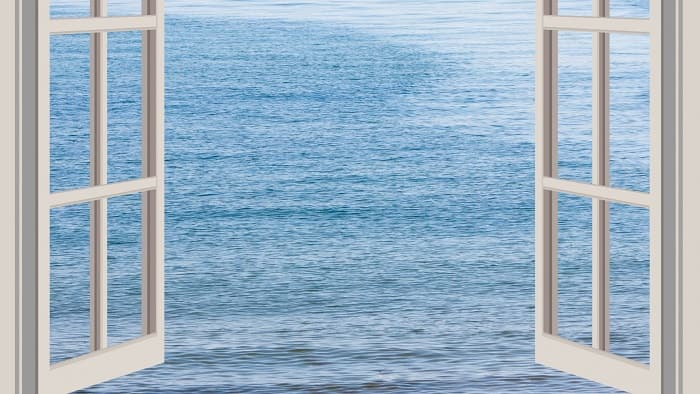

連到小古之第2頁
連到小古之第3頁
連到小古之第3+1頁(課程心得)

心靈力量的概念給予醫療保健工作一個全新的啟示：
心靈也可以使我們的身體更健康。醫療及保健方面的執業人員，長期以來一直相信心靈態度對病人有很大的影響，
但是他們忽略了心靈態度也可被正面的使用來對抗疾病。學習控制自己的情緒和反應，不僅可以增進自療的機轉，
更可保持健康狀態。我們應該好好利用心靈的力量，並確定讓這種力量來對抗疾病而不是對抗你自己。整裝起自
己控制心靈的裝備吧！你可以再一次為自己的健康和身體負起保衛的責任。